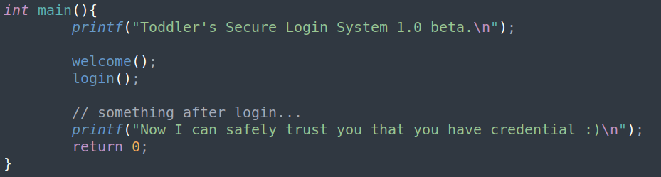

{Mommy told me to make a passcode based login system.
My initial C code was compiled without any error!
Well, there was some compiler warning, but who cares about that?
ssh passcode@pwnable.kr -p2222 (pw:guest)}
looking at the code
we have main function that calls welcome and login functions

welcome:
takes a 100 chars from user input into main char array

login:
(scanf takes an address and writes to it's memory.
this &var is an address
this var is a value
scanf will take anything and treat it as an address.)
takes a user input as a decimal integer and puts in the memory contained at the address passcode is pointing at
in an initial state, passcode is initialized to 0.
the correct writing is scanf("%d", &passcode)
without the &, it means, in our case, go to the value of passcode, eg 0, treat it as an address, and write to its memory.

when trying to execute the program, welcome works fine, yet login() crashes with decimal number in segmentation fault and passes the second auth with string

disassembling and playing
main:

welcome:

lets write 100 A's to the buffer to fill it completely, set a break to the printf call at the end of welcome, and check that our name is at address of ebp-0x70

name is stored at ebp-0x70
login:

passcode1 is stored at $ebp-0x10, if we look at the memory, its overwritten by the name buffer, the last 4 characters of it

accodingly. we are able to set passcode1's initial value through the name buffer
to deeply understand the activity of scanf(), i have made a small scrip to examine it's assmbly.

using & will take the actual address with lea instruction
while without &, we are taking the value inside that address

in the correct way of using scanf, the address of a variable is taken with lea, and the user input is written to memory of that address:

in our case, scanf("%d", passcode1), we take the value of passcode, treat it as an address and change the memory written at that address.
we already know we can overwrite passcode1's value, now we know that the value of passcode1will be treated as an address and it's memory will be changed.
we can change the value of an address of our choice, how could that be useful?
lets consider jmp *addressinstruction - this instruction will take the address, resolve the memory content of that address and set that to be the IP. we may control the IP and redirect it to cat the flag.
look at the next function call after scanf, there is a fflush

asm:

here we have a jmp instruction we can take advantage of.
we may change the memory value of the address 0x804a004to an address of our choice, so when that jmp instruction hits, it will go to 0x804a004, look at its memory, and jump where ever that memory is pointing.
picking an address to go to:
we would like to go to the part in the code of - system("/bin/cat flag");
in login() disas, we see a call to system@plt after the 2 compares, and an address moved to esp

the address moved to esp is the string used in the system()

we would like our IP to be set as instruction login+127 = 0x080485e3 - this is where we want to go.
to summerize it:
payload = "A"*96 + "address of jmp = 0x804a004" + "address of new IP = 0x080485e3"
the address of new IP needs to be unsigned decimal number representation of the hex address
0x080485e3 -> 134514147
giving a final payload = (b"A"*96 + b"\x04\xa0\x04\x08" + b"134514147")
addmiting the exploit, and we have a flag